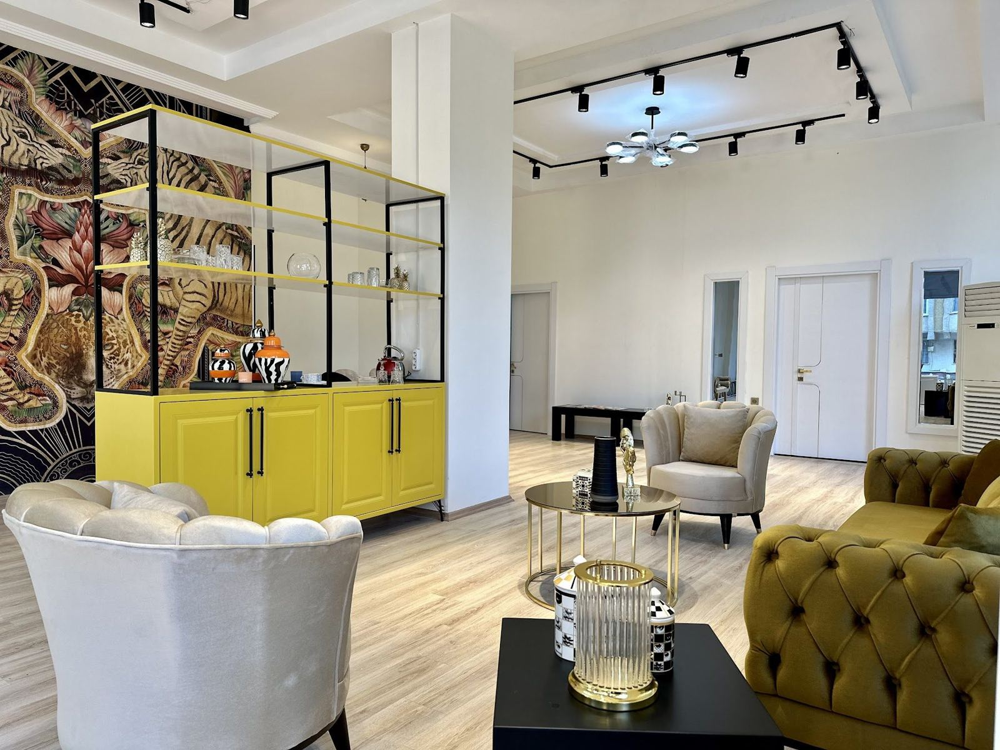

Kendinizi rahat hissedeceğiniz bir oda, dinlenmeye hazır biri
Naci Topçuoğlu Bulvarı'nda bireysel, çift ve aile görüşmeleri.

Çalışma alanları
Her görüşme gizlilik ve saygı çerçevesinde yürütülür.
Bireysel terapi
Kaygı, depresif duygu durumu, stres ve yaşam geçişleri gibi konular güvenli bir ortamda ele alınır.
02Çift ve evlilik terapisi
İletişim sorunları, çatışma döngüleri ve güven konuları çiftle birlikte çalışılır.
03Aile danışmanlığı
Aile içi iletişim, ebeveynlik ve sınırlar konusunda tüm aileyi kapsayan görüşmeler yapılır.
04Kaygı ve panik
Kaygı, panik atak ve fobiler için bilişsel ve davranışçı tekniklerle çalışılır.
05Travma ve yas
Zorlayıcı yaşam olayları ve kayıp sonrası süreçler için destekleyici terapi yöntemleri uygulanır.
06Online terapi
Görüntülü görüşmeyle evden ya da şehir dışından seanslara katılmak mümkündür.
Bir dakikalık nefes molası
Kutu nefesi: 4 saniye nefes alın, 4 saniye tutun, 4 saniye verin, 4 saniye bekleyin. Daireyi takip edin.
Bu egzersiz rahatlamaya yardımcı bir tekniktir, terapinin yerine geçmez.
Terapi süreci
Kendi hızınızda ilerleyen, birlikte planlanan bir süreç.
Ön görüşme
Sizi bu sürece getiren konu ve beklentileriniz hakkında ilk görüşme yapılır.
Değerlendirme
Gerekli durumlarda görüşme ve testlerle ihtiyacınız netleştirilir.
Terapi süreci
Ortak belirlenen hedefler doğrultusunda düzenli seanslar planlanır.
Kapanış ve izlem
Kazanımlar birlikte değerlendirilir, gerekirse izlem görüşmeleri yapılır.
Danışmanlık odası
Size uygun bir saat bulalım
Formu doldurun ya da arayın, randevunuzu birlikte planlayalım.
Randevu oluşturun